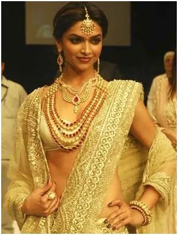
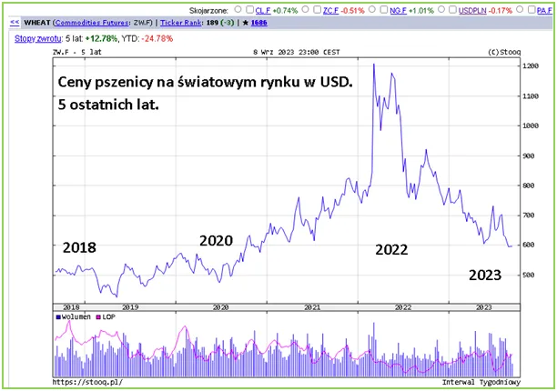
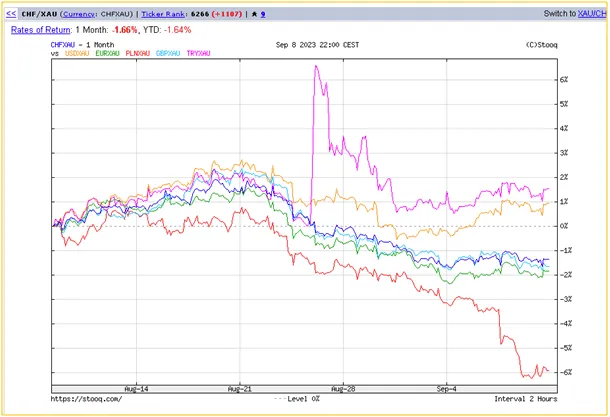

Złoto z papieru się nie świeci.
Dobre zbiory na całym świecie i spowolnienie gospodarcze na zachodzie skutkują spadkiem cen pszenicy, jako wskaźnika podaży żywności na świecie.

Cena pszenicy przebiła psychologiczny poziom 600 dolarów i spada w kierunku poziomów sprzed "plandemii". Ceny żywności to wypadkowa plonów i zapotrzebowania.

O przyszłości naszego życia decyduje wartość pieniądza, a ta jest wypadkową wielu czynników, w tym rozkładu prawdziwych sił politycznych.

Na drugim wykresie widać ruchy walut w stosunku do złota, czyli wspólnej, uniwersalnej miary. Wykres obejmuje ostatni miesiąc i przedstawia tzw. „trend boczny”, czyli jest jak jest, dla podstawowych walut świata. Po szczycie NATO w Wilnie wybija się pozytywnie turecka lira, która zakończyła swą wieloletnią „jazdę z górki”.
Turcja wyprostowała swe relacje z USA i rośnie na lokalną potęgę nie tylko militarną, ale i gospodarczą. Dlaczego? To banalne: ma dostęp do taniej energii i paliw z pierwszej ręki. Ma tani gaz z Azji, swoje złoża gazowe, mnóstwo elektrowni wodnych, oraz kończy budować pierwszą z trzech elektrowni jądrowych. Ponadto dysponuje unikalnymi technologiami przemysłowymi, w tym najbardziej złożonymi w lotnictwie i zbrojeniach. Fioletowy wykres liry wyraźnie podąża za odradzającym się dolarem.
Ten ładny obrazek niestety psuje cienka czerwona linia spadająca gwałtownie w dół. To polska złotówka, która przez miesiąc traci do dolara 6%, a do euro 4%. Ta złowieszcza czerwona linia spada jakby nie oglądała TVPiS i nie słyszała, jaką to potęgą się stajemy na miesiąc przed wyborami.
Obniżenie o procencik stóp kredytowych nie ma tu żadnego znaczenia. Jesteśmy importerem prawie wszystkiego, co wymaga jakiejkolwiek technologii, a jeśli robimy pralki czy żelazka to koszty pracy i energii zaduszą nasz eksport. Na samych jabłkach daleko nie zajedziemy.
Obawiam się, że spadek złotówki będzie się pogłębiał i prawdziwa inflacja dopiero przed nami. Zaklęcia propagandzistów z NBP nie zmienią faktu, że realna inflacja przeciętnego „Kowalskiego” to raczej 40% niż 10% pokazywane w TVPiS. Podstawowy koszyk oraz opłaty, tyle to poszło do góry w ciągu roku a przed nami ciąg dalszy.
Wszystko to piszę, gdy w Indiach rozpoczynają się obrady grupy G20, czyli 20 największych gospodarek świata, którymi są: Argentyna, Australia, Brazylia, Kanada, Chiny, Francja, Niemcy, Indie, Indonezja, Włochy, Japonia, Korea Południowa, Meksyk, Rosja, Arabia Saudyjska, Republika Południowej Afryki, Turcja, Wielka Brytania i USA. Większość z nich to członkowie BRICS, czyli organizacji, której celem jest wyeliminowanie dolara jako światowej waluty rozliczeniowej.
Siła amerykańskich lotniskowców, w relacji do nowych technologii rakietowych i dronów produkowanych w Azji systematycznie maleje i Amerykanie muszą się układać. Widać to właśnie po poprawnych relacjach z Turcją, która jest wielkim partnerem handlowym Rosji i dzięki temu wzmacnia swoją gospodarkę. Podobnie Japonia, prowadzi wielki handel z Rosją i USA nie może na to nic poradzić. Indie, jako demograficzny gigant stają się potęgą zagrażającą Chinom. Światowy wyścig trwa a my przez "płot ceł europejskich" oglądamy to z getta drożyzny "Europa".
Paweł Klimczewski